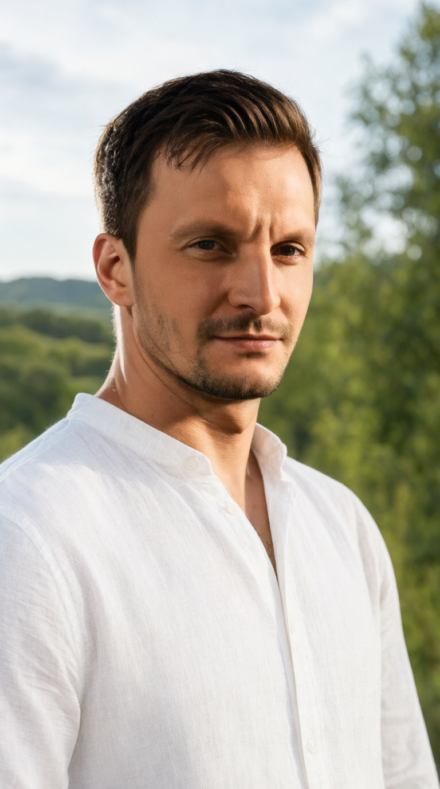

От идеи — к готовому контенту
Посты, сценарии коротких видео, описания товаров и идеи для публикаций. Опиши цель и аудиторию — получи варианты и доработай тот, который подходит именно тебе.
Искусственный интеллект меняет привычные задачи и требования к навыкам. Разберись, что уже можно делать с нейросетями, и почему откладывать знакомство с ними становится всё рискованнее.
Не нужно быть программистом. Начни с понятной задачи — ИИ поможет подготовить черновик, увидеть варианты и быстрее перейти к делу. Важный результат всегда проверяй.
Посты, сценарии коротких видео, описания товаров и идеи для публикаций. Опиши цель и аудиторию — получи варианты и доработай тот, который подходит именно тебе.
Попроси объяснить незнакомую тему простыми словами, кратко изложить длинный текст или сравнить несколько вариантов. Ссылки и важные факты сверяй с первоисточниками.
Черновики писем, планы, списки задач, инструкции и ответы клиентам. ИИ готовит основу, а ты экономишь время на повторяющихся шагах и контролируешь итог.
Настрой повторяемый сценарий для обучения, контент-плана, анализа обращений или подготовки документов. Возможности зависят от конкретного сервиса и тарифа.
Три факта показывают скорость изменений. Ещё три карточки — о рисках, которые легко недооценить, пока кажется, что можно отложить знакомство с нейросетями на потом.
В исследовании за 2025 год 88% респондентов сообщили, что их организация применяет ИИ хотя бы в одной бизнес-функции. Это результат опроса организаций, а не утверждение о каждом бизнесе в мире.
Источник: Stanford HAI, AI Index 2026 ↗По данным Stanford HAI, генеративный ИИ достиг 53% уровня внедрения всего за три года — быстрее, чем персональные компьютеры и интернет на сопоставимом этапе. Темпы заметно отличаются между странами.
Источник: Stanford HAI, AI Index 2026 ↗В тесте OSWorld показатель вырос примерно с 12% до 66,3%. Прогресс заметный, но примерно одна попытка из трёх всё ещё заканчивается неудачей. Это результат конкретного теста, а не гарантия выполнения любой задачи.
Источник: Stanford HAI, Technical Performance ↗Повторяющиеся действия — обработка текста, типовые ответы, сводки и поиск информации — всё чаще можно частично автоматизировать. Это не значит, что профессии исчезнут завтра. Но если работа состоит почти только из выполнения алгоритма, важно понять, какие её части уже умеет делать ИИ.
Один специалист с хорошими AI-навыками может быстрее подготовить черновик, сравнить варианты, собрать информацию и автоматизировать рутину. Опыт по-прежнему важен, но привычка делать всё вручную может стать слабым местом. Вопрос не в панике, а в том, чтобы не уступать преимущество добровольно.
Данные о внедрении ИИ в работу: Stanford HAI ↗Можно месяцами читать новости, сохранять полезные сервисы и думать «потом разберусь» — и так ни разу не применить ИИ на практике. Пока ты ждёшь идеального момента, другие уже пробуют инструменты и набирают опыт. Не нужно сразу менять профессию или покупать курс: начни с одной небольшой задачи. Ошибиться в первой попытке — нормально. Годами так и не попробовать — значит добровольно отдать другим время на освоение нового навыка.
Источники статистики: Stanford HAI, AI Index 2026. Показатели основаны на разных исследованиях и тестах. Карточки о рисках отражают возможные последствия автоматизации, а не прогноз неизбежного исчезновения конкретных профессий.
За 20–30 минут Никита Брецкий рассказывает о MetaBox, его ИИ-инструментах, обучении и партнёрской модели — посмотри, чтобы понять предложение и затем самостоятельно оценить условия участия.
Сейчас выбрано VK Видео. Если плеер не загрузился, открой ролик напрямую по ссылке ниже.

Меня зовут Константин. По работе я занимаюсь сопровождением ИТ-систем и процессов, поэтому мне близка идея использовать технологии не ради модного эффекта, а чтобы решать конкретные задачи проще и эффективнее.
Сейчас я изучаю и пробую инструменты искусственного интеллекта: ищу, где они помогают создавать материалы, разбираться в информации и сокращать рутинные действия. Возможности и результат всегда важно проверять на практике.
Я создал эту страницу, чтобы понятным языком рассказывать о практическом применении ИИ и знакомить людей с проектом MetaBox, который сам изучаю. Не позиционирую себя гуру и не обещаю лёгких денег. Мне важно, чтобы у человека была возможность разобраться в сути, задать вопросы и принять собственное решение.
Если после презентации тебя заинтересовали инструменты ИИ или партнёрская модель MetaBox, напиши мне в Telegram. Обсудим твои вопросы и то, что стоит проверить перед решением. Я не обещаю гарантированного дохода — сначала важно разобраться в продукте и актуальных условиях.